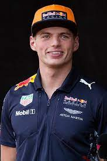
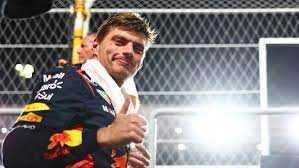

Verstappen, tricampeón del mundo con el sprint de Catar
 Foto de Verstappen El piloto neerlandés de Fórmula 1 Max Verstappen (Red Bull) se proclamó campeón del mundo este sábado por tercera vez, durante el sprint del Gran Premio de Catar, donde los españoles Carlos Sainz (Ferrari) y Fernando Alonso (Aston Martin) sufrieron con los neumáticos blandos en la parte final, sexto y noveno. Verstappen se hizo con el título con seis carreras por delante para el final del Campeonato, incluida la de este domingo en Lusail. El neerlandés fue campeón en sábado cuando su compañero Sergio Pérez se salió de pista en la vuelta 11. Su único y muy lejano rival tenía que terminar en el podio para alargar las cuentas. El campeón defendió su título para unirse con tres en su palmarés a Jack Brabham, Jackie Stewart, Niki Lauda, Nelson Piquet y Ayrton Senna. 'Mad Max' fue segundo en el sprint de Catar por detrás del McLaren de Oscar Piastri, mientras que el otro coche naranja de Lando Norris completó el podio después de una gran remontada con un neumático medio que terminó mejor que el blando. Foto de Verstappen Europa PressMadrid0-7/10/23-20:14
Volver a inicio Volver a deportes